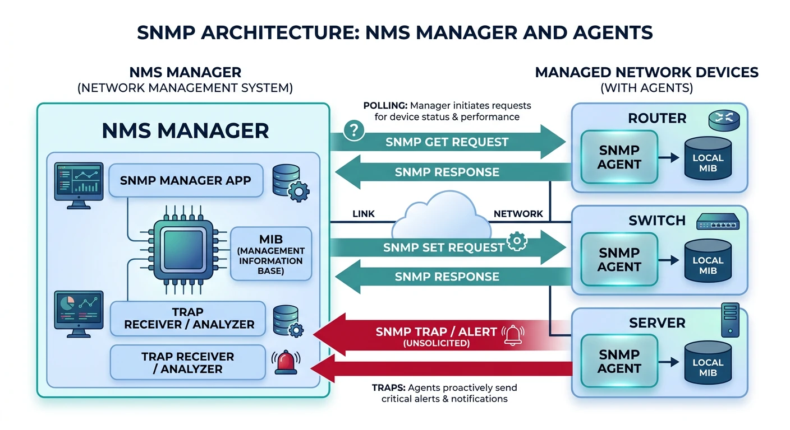
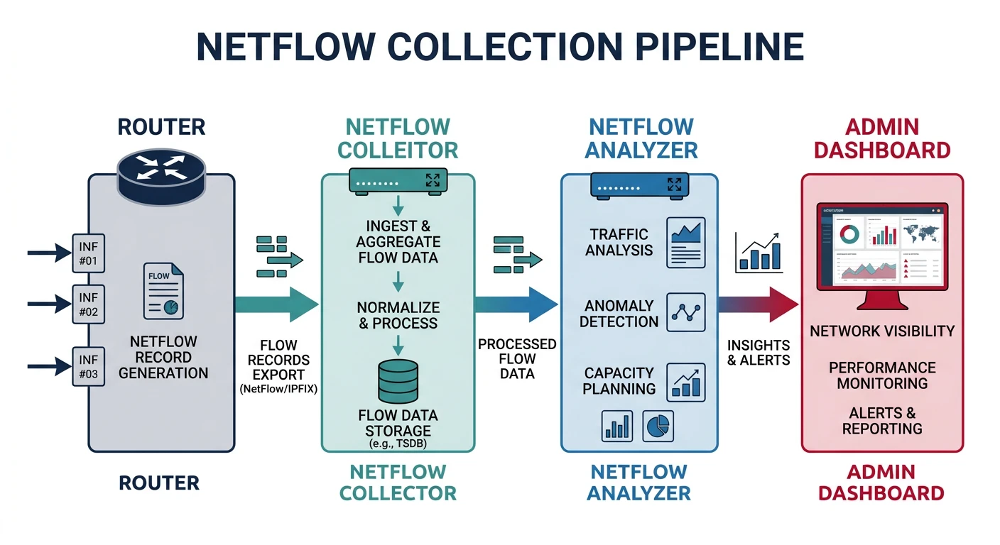
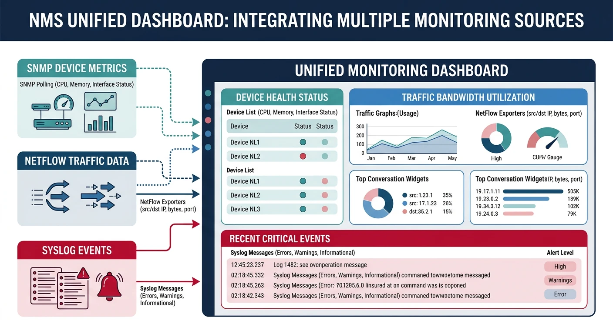

You can't manage what you can't measure. Network management protocols provide visibility into device health, traffic patterns, and system events—essential for troubleshooting and capacity planning.
Series Context: This is Part 16 of 20 in the Complete Protocols Master series. These protocols operate at the Application Layer but monitor all layers of the network stack.
Network Observability Pillars:
1. METRICS (SNMP)
• Device health (CPU, memory, uptime)
• Interface statistics (bytes, errors)
• Configuration state
2. FLOWS (NetFlow/IPFIX)
• Traffic patterns (who talks to whom)
• Bandwidth usage per application
• Security anomaly detection
3. LOGS (Syslog)
• Events and alerts
• Configuration changes
• Security incidents
Together they answer:
• SNMP: "Is the device healthy?"
• NetFlow: "What traffic is flowing?"
• Syslog: "What events occurred?"
SNMP: Simple Network Management Protocol
SNMP is the universal language for device monitoring. Query router interfaces, check printer ink, monitor server CPU—if it's networked, SNMP can probably monitor it.

SNMP architecture: manager polls agents via OID queries, agents send traps on events, MIB defines the data hierarchy
Components
SNMP Architecture
SNMP Components:
1. MANAGER (NMS)
• Polls agents for data
• Receives traps/informs
• Examples: Nagios, Zabbix, PRTG
2. AGENT
• Runs on managed device
• Responds to queries
• Sends traps on events
3. MIB (Management Information Base)
• Database of manageable objects
• Hierarchical tree structure
• Standard + vendor-specific
4. OID (Object Identifier)
• Unique address for each object
• Numeric: 1.3.6.1.2.1.1.1.0
• Named: iso.org.dod.internet.mgmt.mib-2.system.sysDescr.0
Operations:
• GET: Read single value
• GETNEXT: Walk through tree
• GETBULK: Efficient bulk read (v2c+)
• SET: Write value (configuration)
• TRAP: Unsolicited alert
• INFORM: Acknowledged trap (v2c+)
Versions
SNMP Versions
Version
Security
Features
Use Case
v1
Community string (plaintext)
Basic
Legacy only
v2c
Community string (plaintext)
GETBULK, INFORM
Most common
v3
Auth + Encryption
User-based security
Secure deployments
# SNMP queries with snmpwalk and snmpget
# Get system description
snmpget -v2c -c public 192.168.1.1 1.3.6.1.2.1.1.1.0
# Response: STRING: "Cisco IOS Software, C2900 Software..."
# Get system uptime
snmpget -v2c -c public 192.168.1.1 sysUpTime.0
# Walk entire system tree
snmpwalk -v2c -c public 192.168.1.1 system
# Walk interface table
snmpwalk -v2c -c public 192.168.1.1 ifTable
# Get interface stats (index 1)
snmpget -v2c -c public 192.168.1.1 \
ifInOctets.1 ifOutOctets.1 ifInErrors.1
# SNMPv3 with authentication
snmpget -v3 -l authPriv \
-u admin \
-a SHA -A "authpassword" \
-x AES -X "privpassword" \
192.168.1.1 sysDescr.0
# SNMP monitoring with Python (pysnmp)
from pysnmp.hlapi import *
def snmp_get(host, community, oid):
"""Get single SNMP value"""
iterator = getCmd(
SnmpEngine(),
CommunityData(community, mpModel=1), # v2c
UdpTransportTarget((host, 161)),
ContextData(),
ObjectType(ObjectIdentity(oid))
)
errorIndication, errorStatus, errorIndex, varBinds = next(iterator)
if errorIndication:
print(f"Error: {errorIndication}")
return None
elif errorStatus:
print(f"Error: {errorStatus.prettyPrint()}")
return None
else:
for varBind in varBinds:
return varBind[1].prettyPrint()
def snmp_walk(host, community, oid):
"""Walk SNMP tree"""
results = []
for (errorIndication, errorStatus, errorIndex, varBinds) in nextCmd(
SnmpEngine(),
CommunityData(community, mpModel=1),
UdpTransportTarget((host, 161)),
ContextData(),
ObjectType(ObjectIdentity(oid)),
lexicographicMode=False
):
if errorIndication:
print(f"Error: {errorIndication}")
break
elif errorStatus:
print(f"Error: {errorStatus.prettyPrint()}")
break
else:
for varBind in varBinds:
results.append((varBind[0].prettyPrint(),
varBind[1].prettyPrint()))
return results
# Example usage
print("System Description:", snmp_get('192.168.1.1', 'public',
'1.3.6.1.2.1.1.1.0'))
print("\nInterfaces:")
for oid, val in snmp_walk('192.168.1.1', 'public', '1.3.6.1.2.1.2.2.1.2'):
print(f" {oid}: {val}")
Common OIDs
Essential SNMP OIDs
Common SNMP OIDs (MIB-2):
System Group (1.3.6.1.2.1.1):
• sysDescr.0 - System description
• sysUpTime.0 - Uptime (timeticks)
• sysContact.0 - Admin contact
• sysName.0 - Hostname
• sysLocation.0 - Physical location
Interface Group (1.3.6.1.2.1.2):
• ifNumber.0 - Number of interfaces
• ifDescr.X - Interface name
• ifSpeed.X - Bandwidth (bps)
• ifAdminStatus.X - Admin up/down
• ifOperStatus.X - Operational status
• ifInOctets.X - Bytes received
• ifOutOctets.X - Bytes sent
• ifInErrors.X - Input errors
• ifOutErrors.X - Output errors
CPU/Memory (vendor-specific):
• Cisco: 1.3.6.1.4.1.9.9.109
• Linux (HOST-RESOURCES): 1.3.6.1.2.1.25
NetFlow: Traffic Analysis
NetFlow captures metadata about network conversations—who's talking to whom, on what ports, how much data. Essential for capacity planning and security monitoring.

NetFlow pipeline: routers export flow metadata to collectors for traffic analysis and capacity planning
Key Insight: NetFlow doesn't capture packet contents—just flow metadata. Like phone records vs call recordings.
Flow Data
What's in a Flow?
NetFlow v5 Record (7 Tuple):
1. Source IP
2. Destination IP
3. Source Port
4. Destination Port
5. Protocol (TCP/UDP/ICMP)
6. Type of Service (ToS)
7. Input Interface
Plus:
• Packet count
• Byte count
• Start/end timestamps
• TCP flags
• Next-hop IP
NetFlow v9 / IPFIX:
• Template-based (flexible fields)
• IPv6 support
• Variable length fields
• Vendor extensions
# NetFlow architecture
[Router]
|
| NetFlow export (UDP 2055)
↓
[Collector]
|
| Store flows
↓
[Analyzer]
|
| Reports, dashboards
↓
[Admin UI]
Popular Collectors:
• ntopng (open source)
• Elasticsearch + Logstash
• SolarWinds NTA
• PRTG
# Enable NetFlow on Cisco
interface GigabitEthernet0/0
ip flow ingress
ip flow egress
ip flow-export version 9
ip flow-export destination 10.0.0.100 2055
ip flow-export source Loopback0
# Parse NetFlow with Python
def parse_netflow_concepts():
"""NetFlow analysis concepts"""
print("NetFlow Analysis Use Cases")
print("=" * 50)
print("""
# Using ntopng API or custom collector
Common Analysis Queries:
1. TOP TALKERS (bandwidth hogs)
SELECT src_ip, SUM(bytes) as total
FROM flows
GROUP BY src_ip
ORDER BY total DESC
LIMIT 10
2. APPLICATION BREAKDOWN
SELECT dst_port, SUM(bytes) as total
FROM flows
GROUP BY dst_port
ORDER BY total DESC
Port 443: HTTPS
Port 80: HTTP
Port 22: SSH
3. SECURITY: Unusual traffic
SELECT src_ip, dst_ip, dst_port
FROM flows
WHERE dst_port NOT IN (80, 443, 22, 53)
AND bytes > 1000000
4. BANDWIDTH OVER TIME
SELECT
DATE_TRUNC('hour', timestamp) as hour,
SUM(bytes) as total_bytes
FROM flows
GROUP BY hour
ORDER BY hour
""")
print("\nNetFlow Sampling:")
print("• 1:100 sampling = analyze 1% of packets")
print("• Reduces collector load")
print("• Statistically accurate for top-N analysis")
parse_netflow_concepts()
Syslog: Centralized Logging
Syslog is the standard for forwarding log messages. Every Unix system, router, and firewall speaks syslog—send logs to a central server for analysis and retention.
Syslog: devices forward log messages with facility/severity classification to a central logging server
Format
Syslog Message Structure
Syslog Components:
FACILITY (source type):
0 kernel 4 auth 8 uucp
1 user 5 syslog 9-15 local0-7
2 mail 6 lpr 16-23 local0-7
3 daemon 7 news
SEVERITY (0-7, lower=worse):
0 Emergency System unusable
1 Alert Immediate action needed
2 Critical Critical conditions
3 Error Error conditions
4 Warning Warning conditions
5 Notice Normal but significant
6 Info Informational
7 Debug Debug messages
MESSAGE FORMAT (RFC 5424):
VERSION TIMESTAMP HOSTNAME APP-NAME PROCID MSGID MSG
Example:
<34>1 2026-01-31T10:30:00Z router1 sshd 12345 - - Failed login from 10.0.0.5
PRI = Facility * 8 + Severity
<34> = 4*8 + 2 = auth.critical
# Syslog configuration
# Linux rsyslog.conf - send to remote server
*.* @syslog.example.com:514 # UDP
*.* @@syslog.example.com:514 # TCP
# Filter by facility/severity
auth.* @syslog.example.com:514
*.err @syslog.example.com:514
# Cisco IOS
logging host 10.0.0.100
logging trap informational
logging facility local7
# Test syslog
logger -p local0.info "Test message from $(hostname)"
# View logs
tail -f /var/log/syslog
journalctl -f
# Syslog server with Python
import socketserver
import re
from datetime import datetime
class SyslogHandler(socketserver.BaseRequestHandler):
"""Simple syslog receiver"""
def handle(self):
data = self.request[0].strip().decode('utf-8')
# Parse syslog message
match = re.match(r'<(\d+)>(.+)', data)
if match:
pri = int(match.group(1))
message = match.group(2)
facility = pri // 8
severity = pri % 8
facilities = ['kern', 'user', 'mail', 'daemon',
'auth', 'syslog', 'lpr', 'news']
severities = ['emerg', 'alert', 'crit', 'err',
'warning', 'notice', 'info', 'debug']
fac_name = facilities[facility] if facility < len(facilities) else f'local{facility-16}'
sev_name = severities[severity]
print(f"[{datetime.now()}] {self.client_address[0]} "
f"{fac_name}.{sev_name}: {message}")
def start_syslog_server(port=514):
"""Start UDP syslog server"""
server = socketserver.UDPServer(('0.0.0.0', port), SyslogHandler)
print(f"Syslog server listening on UDP {port}")
server.serve_forever()
# Production: Use rsyslog, syslog-ng, or ELK stack
# start_syslog_server()
print("""
Production Syslog Stack:
[Devices] → [rsyslog/syslog-ng] → [Kafka] → [Logstash] → [Elasticsearch]
↓
[Kibana]
""")
NMS Integration
Network Management Systems (NMS) combine SNMP, NetFlow, and syslog into unified dashboards. Popular options include Zabbix, Nagios, PRTG, and cloud-native solutions like Datadog.

NMS integration: unified dashboards combine SNMP, NetFlow, and Syslog for complete network visibility
Tools
NMS Options
Tool
Type
Best For
Zabbix
Open source
Enterprise monitoring
Nagios
Open source
Alert-focused
PRTG
Commercial
Windows environments
Grafana
Open source
Visualization
Datadog
SaaS
Cloud-native
LibreNMS
Open source
Autodiscovery
# Zabbix SNMP monitoring example
# 1. Add host with SNMP interface
# 2. Link template (e.g., Template Net Cisco IOS SNMPv2)
# 3. Items automatically created from MIB
# Zabbix agent configuration (alternative)
Server=zabbix.example.com
ServerActive=zabbix.example.com
Hostname=web-server-01
# Custom user parameter
UserParameter=custom.metric,/path/to/script.sh
# Prometheus metrics (modern alternative)
# SNMP Exporter + Prometheus + Grafana stack
Summary & Next Steps
Key Takeaways:
SNMP: Universal device monitoring (metrics)
NetFlow: Traffic analysis (flows)
Syslog: Centralized logging (events)
SNMPv3: Use for security (auth + encryption)
NMS: Unified monitoring dashboards
Quiz
Test Your Knowledge
SNMP v2c vs v3 security? (Community string vs auth+encryption)
What's an OID? (Object Identifier, unique address)
NetFlow captures what? (Flow metadata, not content)
Syslog severity 0? (Emergency, worst)
SNMP TRAP vs INFORM? (Unacknowledged vs acknowledged)